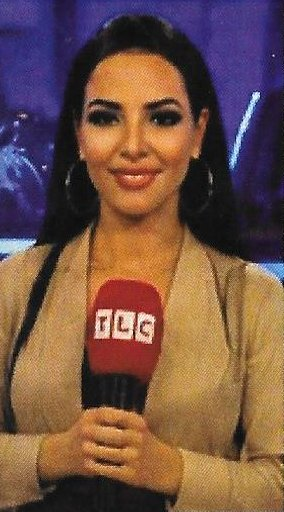
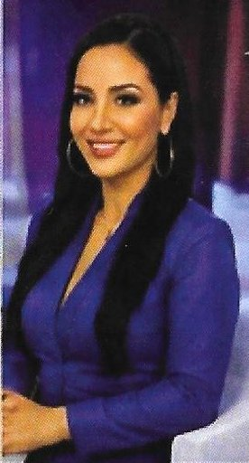
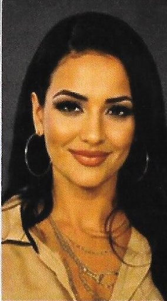
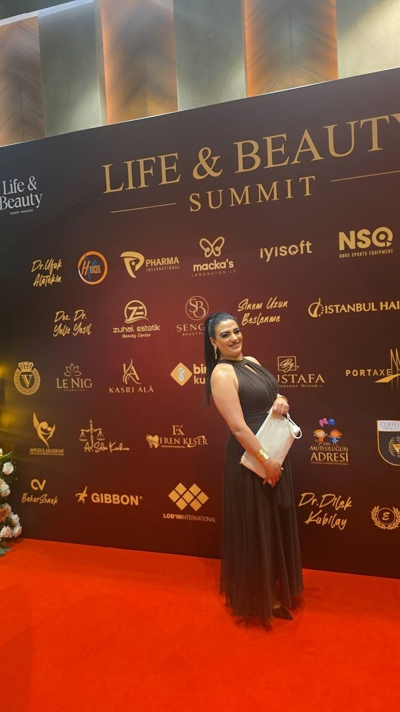
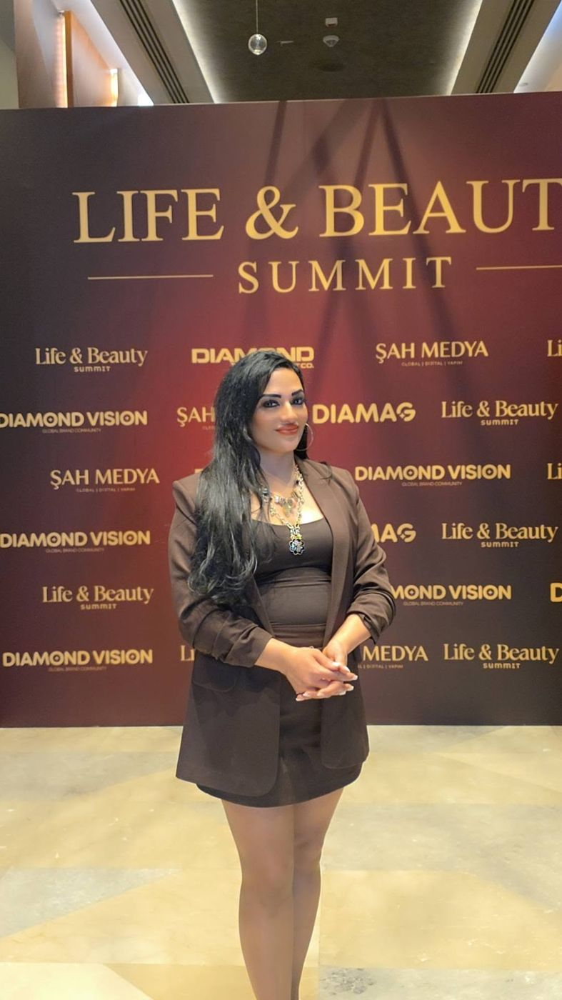
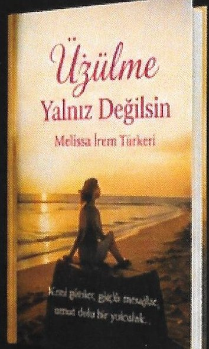

Ekranda, sahnede, sahada
TV programları, röportajlar ve girişimciliğe verilen emeğin karşılığı olan ödüller.
Konuk ve sunucu
Business Channel Türk TV, TLC ve çeşitli programlarda konuk ve sunucu olarak yer aldı. Türkçe ve Almanca röportajlarla Almanya'daki Türk toplumunun sesini ekranlara taşıyor.
- TELE1 – "Almanya–Türkiye İşbirlikleri" canlı yayını (8 Ağustos 2026)
- Business Channel Türk TV
- TLC
- Türkçe & Almanca röportajlar



Gazete ve Dergi Röportajları
Girişimcilik, kadın gücü ve uluslararası danışmanlık alanlarında röportajları yayınlandı. Bizden Bil İş ve Sanat Dergisi'nin Ağustos 2026 sayısında kapak oldu; Neriman Dergisi başta olmak üzere çeşitli yayınlarda yer aldı.
Avrupa'nın Yıldızları
Neriman Dergisi tarafından "Yılın En Başarılı İş Kadını" ödülüne layık görüldü.
Yılın En İyi Tercümanı ve Danışmanı
Cihat Dündar Organizasyonu'nun 5. Altın Meslek & Kariyer Ödülleri'nde (30 Temmuz 2026, İstanbul) "Yılın Uluslararası Başarı Gösteren En İyi Tercümanı ve Danışmanı" ödülüne layık görüldü.
Türkiye İş İnsanları Danışmanı
Uluslararası tercümanlık, danışmanlık ve halkla ilişkiler alanlarında; Almanya ile Türkiye arasındaki ekonomik, ticari ve kültürel iş birliklerinde danışman olarak çalışıyor.
Yayınlar & ödül törenleri
Büyütmek için görsellere tıklayın.


Kırmızı halıdan kareler




Başarılar & Ödüller
Girişimcilik, kadın gücü ve uluslararası danışmanlık alanlarındaki katkılarımızdan dolayı aldığımız ödüller bizler için büyük bir onur kaynağıdır. Belgeleri büyütmek için tıklayın.


…ve daha birçok takdir ve teşekkür belgesi.
Kitap & Podcast

“Üzülme Yalnız Değilsin”
Melissa İrem Türkeri, yazarlık yolculuğuna 2024 yılında yayımladığı “Üzülme Yalnız Değilsin” adlı kitabıyla başladı. Kısa sürede okuyucuların ilgisini gören eser, güçlü mesajları ve içten anlatımıyla dikkat çekti. Aynı yıl “Yılın En Başarılı Psikoloji ve Hücreye Yazarı” ödülünü aldı.
Podcast: Melissa ile Bunu da Konuşalım
Her hafta farklı konularıyla hayata, ilişkilere, başarıya ve kişisel gelişime dair samimi ve ilham verici sohbetler.
Sözler, insanın yüreğine dokunursa değişim orada başlar.
Röportajlar & videolar
Röportajlar, programlar ve daha fazlası. Oynatmak için tıklayın.
Videoyu başlattığınızda YouTube (Google) ile bağlantı kurulur ve veri aktarılır. Ayrıntılar Datenschutz sayfasında.
Tüm videolar: YouTube kanalıRöportaj veya iş birliği için
Program, röportaj, etkinlik sunumu veya iş birliği teklifleriniz için bizimle iletişime geçin.